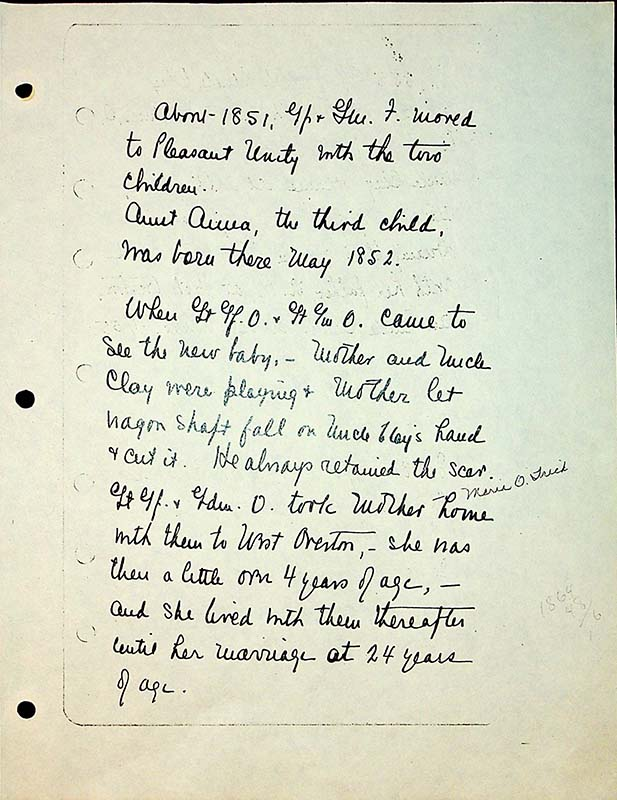

About 1851, Gf & Grm F. moved to Pleasant Unity with the two children.
Aunt Anna, the third child, was born there May 1852.
When Gt.Gf O. a Gt Gm O. came to see the new baby,- Mother and Uncle Clay were playing & Motherlet the wagon shaft fall on Uncle Clay's hand & cut it. He always retained the scar. Gt Gf and Gdm O. took Mother home with them to West Overton. She was a little over 4 years of age, - and she lived with them thereafter until her marriage at 24 years of age.